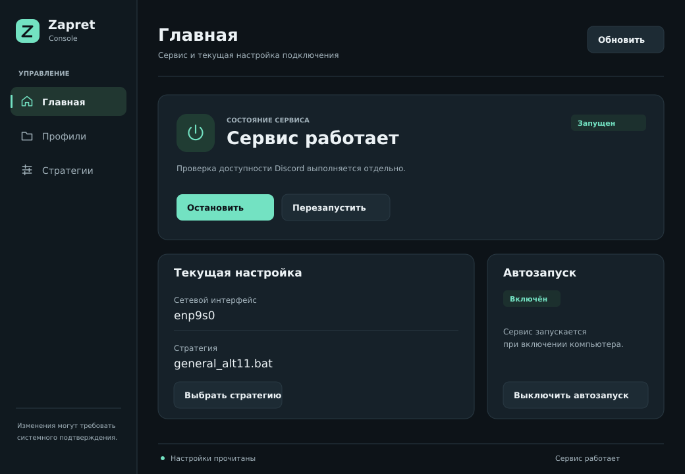

<!doctype html><html lang="ru"><meta charset="utf-8"><meta name="viewport" content="width=device-width,initial-scale=1"><title>Zapret — макет GUI v1</title><style>*{box-sizing:border-box}body{margin:0;padding:24px;background:#080d11;color:#ecf2f5;font:14px system-ui}header,main{max-width:1040px;margin:auto}header p{color:#a1b1ba;font-size:13px}nav{display:flex;gap:8px;flex-wrap:wrap;margin:20px 0}button{padding:10px 18px;border:1px solid #293943;border-radius:8px;background:#162129;color:#ecf2f5;cursor:pointer}button[aria-pressed=true]{background:#73e2c2;color:#0d1318}button:focus-visible{outline:3px solid white;outline-offset:3px}img{display:block;width:100%;border:1px solid #293943;border-radius:16px}h1{font-size:22px;font-weight:600}</style><header><h1>Zapret Console · дизайн GUI v1</h1><p>Макет с примером данных. Не подключён к сервису и не меняет настройки компьютера.</p><nav aria-label="Экраны макета"><button data-src="main.svg" aria-pressed="true">Главная</button><button data-src="profiles.svg" aria-pressed="false">Профили</button><button data-src="strategies.svg" aria-pressed="false">Стратегии</button><button data-src="save-dialog.svg" aria-pressed="false">Диалог сохранения</button></nav></header><main></main><script>document.querySelectorAll('button').forEach(b=>b.onclick=()=>{document.querySelectorAll('button').forEach(a=>a.setAttribute('aria-pressed',String(a===b)));document.getElementById('screen').src=b.dataset.src;document.getElementById('screen').alt='Макет: '+b.textContent;});</script></html>